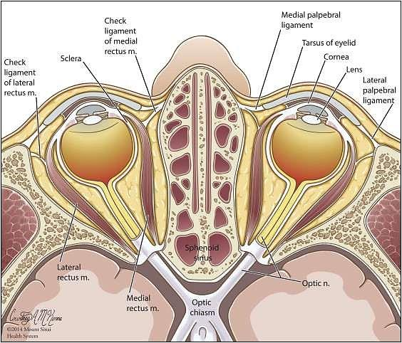

Part III · Anatomy
Foramina of the orbit
1) Optic foramen
Connects the orbit with the middle cranial fossa and transmits:
- The optic nerve with its meningeal coverings.
- The ophthalmic artery and sympathetic fibres.
2) Superior orbital fissure
- Oculomotor, trochlear and abducent cranial nerves.
- The three branches of the ophthalmic division of the trigeminal nerve.
- Superior and inferior ophthalmic veins.
- Sympathetic fibres to the ciliary ganglion.
3) Inferior orbital fissure
- Maxillary division of the trigeminal nerve.
- The infra-orbital artery.
